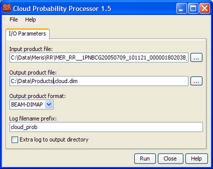

| Cloud Probability- Processor Description | |
Please note: The chapter BEAM Scientific Data Processors provides a general description for all BEAM data processors. It describes the common graphical user interface (GUI), the command-line interface and the common processing request file format.

 to invoke a
standard file dialog. to invoke a
standard file dialog.
to invoke a
standard file dialog. to invoke a
standard file dialog. The following table describes the Cloud Probability processor specific processing request file contents. For a detailed description of the processing request file concept and file specification please look at chapter Processing Request Files.
| Parameter name | Description | Type | Valueset |
|---|---|---|---|
| type | Request type. Mandatory attribute of the Request element |
String | "MER_L2_CLOUD" |
The algorithm uses two different neural nets. The first for usage over land and the second for usage over the open ocean. By default every pixel which altitude is below -50m is treated as ocean.
This selection can be edited in the config files, which together with the neural nets are unpacked
into a subdirectory of the user directory. The subdirectory used is
.beam/cloud-probability-processor/auxdata
The file cloud_config.txt specifies which configuration for the land and the ocean case are used.
In the respective configuration files following properties are of interest:
neural_net specifies the filename of the neural net to use.validExpression gives a boolean expression,
which is used to select between the land and the ocean net.true the land net is used.
As a second option the expression for the ocean net is evaluated.
If neither of the two expressions evaluate to true, the no-data value is set.